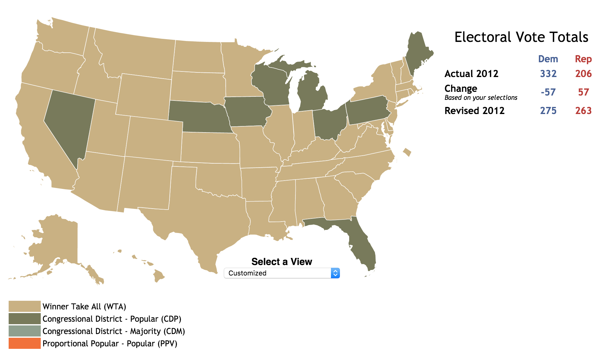
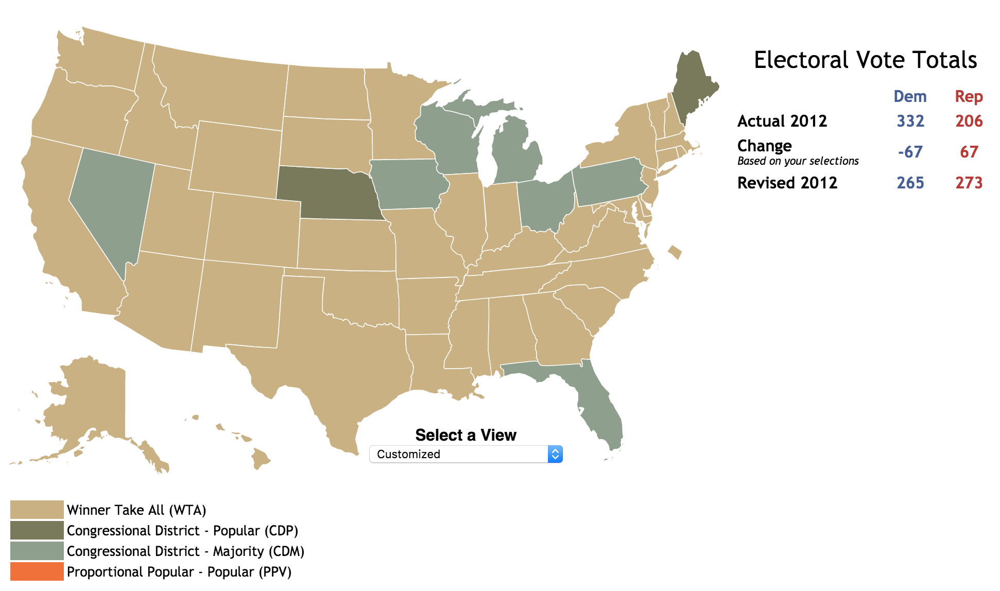
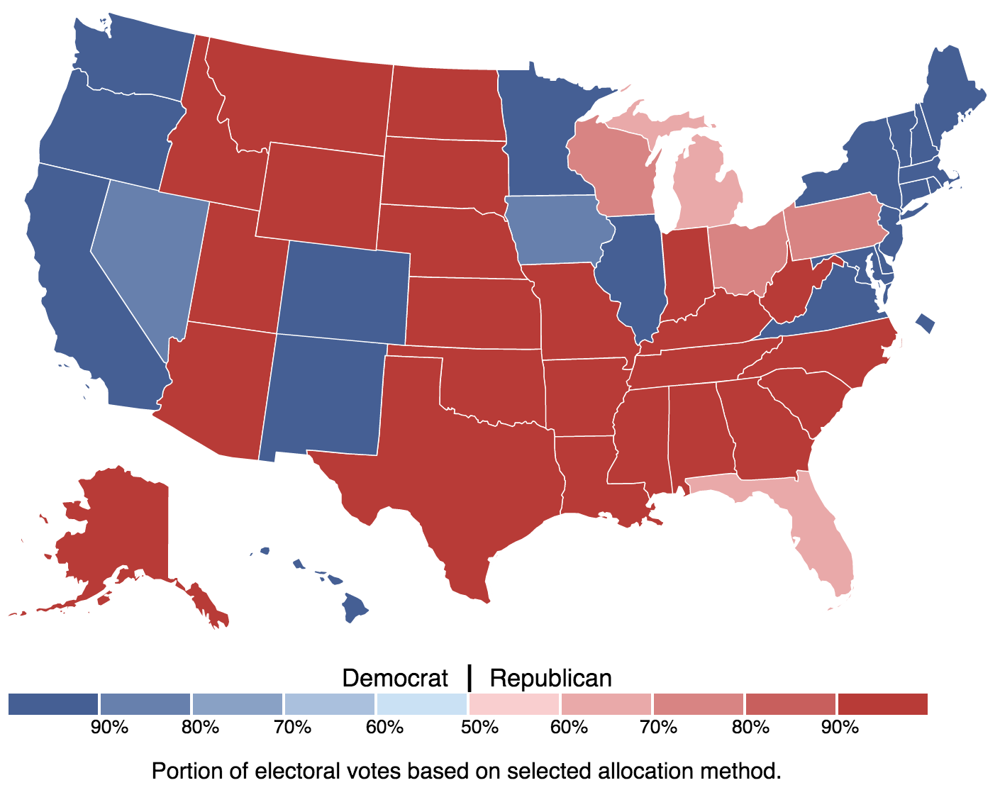

Update (11-23-2016): Added Ohio to the list of vulnerable states.
In U.S. presidential elections, most states award all of their electoral votes to the winner of the popular vote, but nothing says that this has to be the case. In fact, prior to 1832, there was a wide variety of methods of selecting electors:
Source: Wikipedia.
Today, two states apportion their electoral votes based on the winner of the popular vote in each congressional district: Maine (since 1972) and Nebraska (since 1992). Given how few congressional districts each state has (2 for Maine and 3 for Nebraska), this system rarely changes the outcome, though Obama won one electoral vote from Nebraska in 2008 and Trump won one from Maine this year.
What would it look like if a larger state were to adopt this electoral system?
As an example, let's look at Wisconsin.
Source: Milwaukee Journal Sentinel.
Despite Wisconsin generally being a blue state, and voting Democratic in every presidential race since 1988 except 2016, it has consistently had 5 Republican and 3 Democratic representatives, largely thanks to gerrymandering (note that it has two extremely D-leaning districts and four slightly R-leaning districts, by Cook PVI, suggesting an imbalanced districting map).
This means that if Wisconsin were to split up 8 of its electoral votes based on district results, Republicans would be all-but-guaranteed to get 5 electoral votes minimum in the state, regardless of what the actual vote is.
Could Wisconsin do this? Certainly. All that it would take is an ordinary law to be passed, and as luck would have it, Republicans control both state houses and the governorship.
In fact, why stop at Wisconsin (with 10 EVs)? Here are some other states under complete Republican control at the moment:
All of these states have some things in common: they were all won by Democrats at least a couple times in the past few elections, and they all (aside from Iowa and Nevada) had more congressional districts vote Republican than Democrat in each of those years.
Let's go back in time for a moment to 2012. As we recall, Obama won handily, 332 EVs to Romney's 206:
Source: 270ToWin.
But what if the seven states that we've just been talking about (Florida, Iowa, Michigan, Nevada, Ohio, Pennsylvania, and Wisconsin) had all awarded their electoral votes using the Maine/Nebraska system that year?
 Source: 270ToWin.
In fact, these states could have gone a little further and rewarded their remaining 2 electoral votes to the winner of the majority of congressional districts (rather than to the winner of the statewide popular vote):
 Source: 270ToWin.
And would you look at that? Obama's once-sizable 126-point lead has evaporated completely and he ends up narrowly losing the electoral vote.
This is what the electoral college map ultimately looks like in this scenario:
 Source: 270ToWin.
Note that despite our hypothetical Obama winning the popular vote in Florida, Michigan, Ohio, Pennsylvania, and Wisconsin, in some cases by large margins, he still ends up losing the electorical vote in all of these states. And this map is close to a best-case scenario for Democrats under this electoral vote configuration.
So, what's stopping Republican state legislatures from going through with this?
Nothing, really. Since 2010, proposals to adopt the Maine/Nebraska method have been made in Pennsylvania, Michigan, and Wisconsin.
So far, none of these proposals have gone through, but Republicans now have more control over the legislatures of each of these states than ever before, with overwhelming legislative majorities in each. I'd be very surprised if at least one of these states doesn't make a push for this at some point soon, though perhaps with Trump winning Florida, Pennsylvania, Wisconsin, and (likely) Michigan this year, this may become seen as less of a priority.
One other reason that these proposals may fall through is that if they're widely perceived as being blatantly partisan, this could mobilize voter turnout to help Democrats take over state houses in time for the 2020 redistricting, this leaving open the possibility of this tool ultimately being used against Republicans. But this is all speculation at this point.
If nothing else, this serves to illustrate just how important state politics are. Not only have Republicans enjoyed a significant edge in House races since 2010 largely due to control of the redistricting process, but even the distribution of electoral votes could be manipulated by state politics.
Democrats don't seem to have had a solid strategy for winning state legislative seats for a while now:
Now would be a great time to fix that.
Thanks to Dmitry Mazin for talking through this with me.